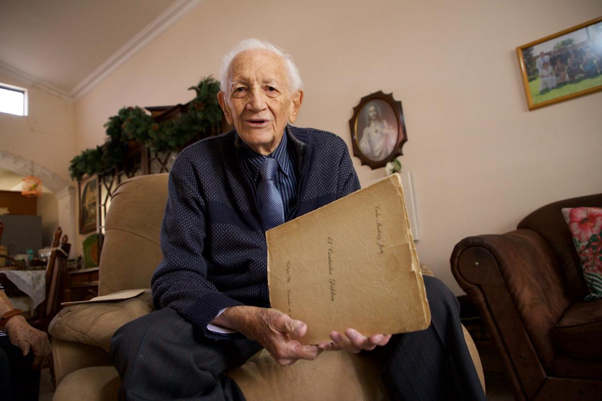

¿Cómo crecer sin perder el alma?
A finales del siglo XX, la Universidad se enfrenta a una decisión decisiva: expandirse sin perder identidad.
Nace la Unidad de Estudios Superiores de Salvatierra (UNESS).
No es expansión: es necesidad social.

Sin infraestructura, sin recursos suficientes… pero con voluntad.
Colaborar, adaptarse, innovar y comprometerse.
La Universidad no se recibió hecha
Se construyó en el camino
Docentes, estudiantes y administrativos construyen el proyecto.
Celaya y Salvatierra se unen en un modelo de Campus.
Ciencias Sociales y Administrativas reúne décadas de historia.
Crecer también es riesgo
La cercanía puede diluirse
Recordar es identidad.
“Enamórense de su Universidad…”
Don Carlos representa la memoria viva de la institución.
La Universidad no es estructura: es historia compartida.
Y sigue viva mientras alguien la recuerde.